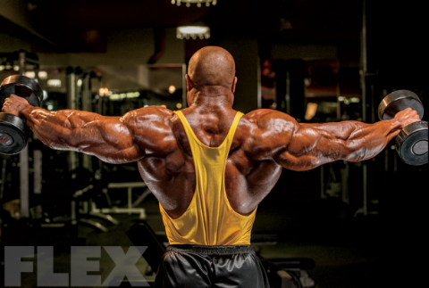

운동 일지
어깨 운동
등 운동
가슴 운동
어깨 운동
백 레터럴 레이즈
8kg * 15reps * 5set
사이드 레터럴 레이즈

8kg * 20rep * 5set
밀리터리 프레스
50kg * 10reps * 5set
스미스머신 밀리터리 프레스
50kg * 8reps * 5set
백 레터럴 레이즈
10kg * 15reps * 5set
사이드 레터럴 레이즈
8kg * 15reps * 5set